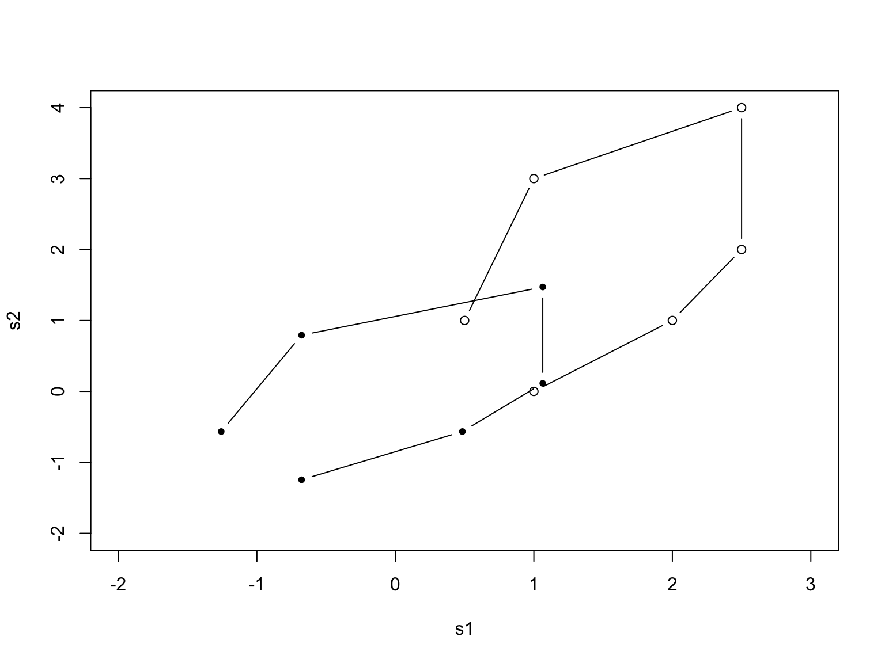
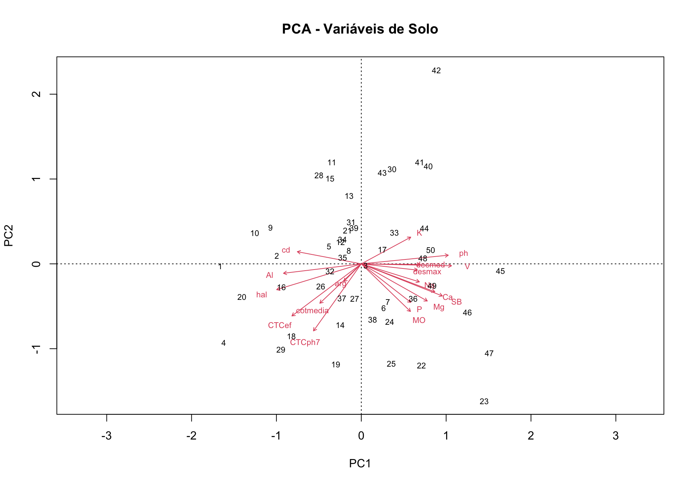
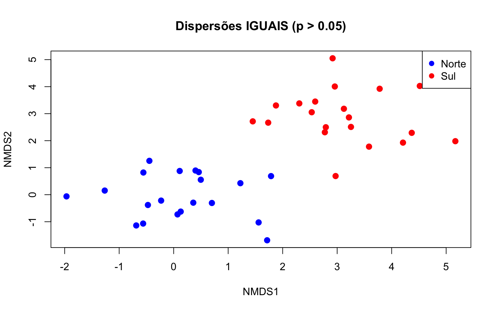
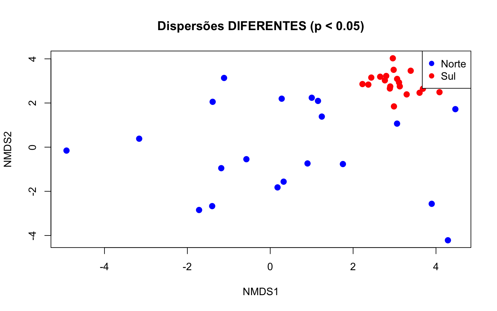

Introdução às Ordenações
Simplificando Dados Complexos de Vegetação
Pedro Higuchi
UDESC - Universidade do Estado de Santa Catarina
2025-11-04
O que vamos aprender hoje?
O que é ordenação e para que serve
Como visualizar dados complexos
Três técnicas básicas: PCA, DCA e NMDS
Qual método usar em cada situação
Prática com dados reais da Floresta com Araucária
Objetivo: Tornar dados complicados mais fáceis de entender! 📊→📈
O Problema
Imagine que você mediu:
50 parcelas de floresta
90 espécies diferentes de árvores
10 variáveis de solo em cada parcela
Pergunta: Como visualizar tudo isso em um gráfico? 🤔
Resposta: Não dá! São muitas dimensões…
Solução: ORDENAÇÃO = resumir em 2 ou 3 dimensões que você pode ver!
Analogia: Índice de Vegetação (NDVI)
Sensor multiespectral:
- 🔴 Vermelho (RED)
- 🌿 Infravermelho (NIR)
- 🔵 Azul, 🟢 Verde
- Outras bandas…
→ Múltiplas dimensões
Índice NDVI:
\[NDVI = \frac{NIR - RED}{NIR + RED}\]
- Único número (-1 a +1)
- Resume “saúde vegetal”
→ 10+ bandas → 1 índice
NDVI resume bandas espectrais | PCA resume dados ambientais por exemplo
10 Variáveis ambientais → PC1 e PC2 🌲
O que descobrimos com ordenação?
Parcelas parecidas ficam próximas no gráfico
Parcelas diferentes ficam distantes
Gradientes ambientais (fertilidade, altitude, umidade)
Grupos naturais de parcelas ou espécies
Fatores mais importantes que explicam as diferenças
Nossos Dados Exemplo
Floresta Ombrófila Mista (Floresta com Araucária)
Vegetação:
- 50 parcelas
- 90 espécies de árvores
- 2.837 indivíduos
- Espécie principal: Araucaria angustifolia
Ambiente:
- pH do solo
- Nutrientes (P, K, Ca, Mg)
- Matéria orgânica
- Altitude
- Declividade
Dois Tipos de Ordenação
Hoje vamos focar em ordenação NÃO-RESTRITA (exploração inicial)
PCA - Análise de Componentes Principais
Quando usar:
- Dados ambientais (solo, clima, topografia)
- Gradientes curtos (< 3 SD)
- Poucos zeros na matriz de dados
Ideia básica: Encontra as direções de maior variação nos dados
O que são Gradientes Curtos? 📏
Gradiente < 3 SD = Condições ambientais homogêneas
EXEMPLO 1: Parcelas em encosta sul
- Condições similares
- Variação pequena
P1: pH 5.2, Ca 4.5, Alt 920m
P2: pH 5.5, Ca 5.1, Alt 935m
P3: pH 5.0, Ca 4.2, Alt 915m✅ pH: 5.0-5.5 (variação 0.5)
✅ Ca: 4.2-5.1 (variação 0.9)
✅ Altitude similar
EXEMPLO 2: Topo, enconsta e baixada
- Condições muito diferentes
- Variação grande
P1: pH 6.5, Ca 12.5, Alt 850m
P15: pH 5.5, Ca 5.2, Alt 950m
P30: pH 4.0, Ca 1.2, Alt 1100m❌ pH: 4.0-6.5 (variação 2.5)
❌ Ca: 1.2-12.5 (variação 11.3)
❌ Altitude muito diferente
Entendendo o SD (Desvio Padrão)
SD = Standard Deviation - unidade que mede a mudança nas condições ambientais
Interpretação prática com variáveis de solo:
- < 3 SD = Condições variam pouco → ambiente homogêneo
- > 4 SD = Condições variam muito → ambiente heterogêneo
Entendendo o SD (Desvio Padrão)
Exemplo comparativo:
Gradiente CURTO (2.5 SD):
pH: 5.0 → 5.5 → 5.2 → 5.3 (variação: 0.5 unidades)
Cálcio: 4.2 → 5.1 → 4.5 → 4.8 (variação: 0.9 cmolc/kg)
Altitude: 915 → 935 → 920 → 928 (variação: 20 m)
→ Condições SIMILARES ✅ Use PCA/RDA
Gradiente LONGO (5.0 SD):
pH: 6.5 → 5.5 → 4.0 (variação: 2.5 unidades)
Cálcio: 12.5 → 5.2 → 1.2 (variação: 11.3 cmolc/kg)
Altitude: 850 → 950 → 1100 (variação: 250 m)
→ Condições MUITO DIFERENTES ❌ Use DCA/CCA/NMDS⚠️ Limitação Importante do PCA
PCA funciona mal com dados de vegetação porque:
- Muitas espécies ausentes = muitos zeros (50-80% da matriz)
- Distribuições assimétricas
- Pressuposição de linearidade não atendida
PCA - Exemplo Visual Passo a Passo
# Criar dados simples (6 parcelas x 2 espécies)
raw <- matrix(c(1, 2, 2.5, 2.5, 1, 0.5, 0, 1, 2, 4, 3, 1), nrow = 6)
colnames(raw) <- c("s1", "s2")
rownames(raw) <- c("p1", "p2", "p3", "p4", "p5", "p6")
raw s1 s2
p1 1.0 0
p2 2.0 1
p3 2.5 2
p4 2.5 4
p5 1.0 3
p6 0.5 1Matriz de dados: 6 parcelas × 2 espécies
PASSO 1: Dados Originais

PASSO 2: Dados Padronizados
PASSO 3: PCA (Eixos Rotacionados)
PC1 PC2
p1 -1.35966283 -0.4017469
p2 -0.05820754 -0.7424332
p3 0.83271234 -0.6725842
p4 1.79348126 0.2881847
p5 0.08149056 1.0394065
p6 -1.28981378 0.4891730PASSO 4: Biplot

PCA com Dados Reais - Solo da FOM
# Carregar dados de solo
amb <- read.table("../data/environmental_data.csv",
header = TRUE, sep = ";", dec = ",",
row.names = 1)
# Ver as primeiras linhas
head(amb, 3) arg ph P K Na MO hal Al Ca Mg CTCph7 CTCef V
1 31 3.9 2.0 54 0 4.2 24.4 11.2 0.8 0.5 25.83846 37.03846 5.567133
2 27 4.2 1.7 95 0 7.3 19.4 6.1 2.8 1.2 23.64359 29.74359 17.948162
3 24 4.8 5.6 125 0 9.1 9.7 1.6 9.2 1.8 21.02051 22.62051 53.854599
SB cd cotmedia desmax decmed
1 1.438462 94.28 1000.25 4 8
2 4.243590 94.54 1009.25 5 9
3 11.320513 93.24 1014.50 4 9Executando PCA
Call:
rda(X = amb, scale = TRUE)
Partitioning of correlations:
Inertia Proportion
Total 18 1
Unconstrained 18 1
Eigenvalues, and their contribution to the correlations
Importance of components:
PC1 PC2 PC3 PC4 PC5 PC6 PC7
Eigenvalue 8.8268 2.1053 1.47089 1.21485 1.13823 0.79450 0.69897
Proportion Explained 0.4904 0.1170 0.08172 0.06749 0.06323 0.04414 0.03883
Cumulative Proportion 0.4904 0.6073 0.68905 0.75654 0.81978 0.86392 0.90275
PC8 PC9 PC10 PC11 PC12 PC13
Eigenvalue 0.48973 0.42928 0.30179 0.23173 0.164537 0.080657
Proportion Explained 0.02721 0.02385 0.01677 0.01287 0.009141 0.004481
Cumulative Proportion 0.92996 0.95381 0.97057 0.98345 0.992587 0.997068
PC14 PC15
Eigenvalue 0.043958 0.0088237
Proportion Explained 0.002442 0.0004902
Cumulative Proportion 0.999510 1.0000000O que são Autovalores? 🔢
Autovalores medem quanto de variação cada eixo captura dos dados.
Executando PCA
- Os loadings mostram a correlação entre cada variável original e os componentes principais!
PC1 PC2
arg -0.2414695 -0.243726277
ph 1.2062885 0.120043974
P 0.6868190 -0.534306781
K 0.6857349 0.370407138
Na 0.8049970 -0.249722086
MO 0.6818968 -0.659944087
hal -1.1726161 -0.357639041
Al -1.0782134 -0.130638700
Ca 1.0193841 -0.387144031
Mg 0.9149885 -0.515201427
CTCph7 -0.6620791 -0.929701668
CTCef -0.9614735 -0.722142386
V 1.2510646 -0.026751844
SB 1.1238388 -0.445070486
cd -0.8864982 0.168675978
cotmedia -0.5742349 -0.546073313
desmax 0.7780676 -0.086667502
decmed 0.8180250 -0.008115826
attr(,"const")
[1] 5.449632Visualizar PCA - Solo
Interpretação: Setas vermelhas = variáveis de solo | números = parcelas
Como Interpretar o Biplot?
Setas longas = variável importante
Setas curtas = variável pouco importante
Setas no mesmo sentido = correlacionadas (ex: Ca e Mg)
Setas opostas = correlação negativa (ex: pH e Al)
Parcelas próximas = solo parecido
Parcelas distantes = solo diferente
NMDS - Para Dados de Vegetação
Quando a PCA não funciona bem…
Problemas com dados de vegetação:
- Muitas espécies ausentes (zeros)
- Distribuições muito assimétricas
- Gradientes muito longos
Solução: NMDS (Non-metric Multidimensional Scaling)
NMDS - O Mais Flexível
Non-metric Multidimensional Scaling
Vantagens:
- Funciona com qualquer tipo de dado
- Não assume relações lineares
- Muito usado em ecologia moderna
- Robusto e confiável
Avaliação: Stress (quanto menor, melhor)
NMDS na Prática
# Fazer NMDS
# Carregar dados de vegetação
veg <- read.table("../data/vegetation_data.csv",
header = TRUE, sep = ";", dec = ",")
# Criar matriz: parcelas (linhas) x espécies (colunas)
matriz <- as.data.frame.matrix(table(veg$PC, veg$Species))
nmds_result <- metaMDS(matriz,
k = 2, # 2 dimensões
distance = "bray", # índice de Bray-Curtis
trymax = 100) # tentativasWisconsin double standardization
Run 0 stress 0.2953069
Run 1 stress 0.3016858
Run 2 stress 0.2993289
Run 3 stress 0.3048612
Run 4 stress 0.2946375
... New best solution
... Procrustes: rmse 0.02626173 max resid 0.08936126
Run 5 stress 0.3042351
Run 6 stress 0.3074333
Run 7 stress 0.3061952
Run 8 stress 0.3068137
Run 9 stress 0.3038217
Run 10 stress 0.3057733
Run 11 stress 0.304079
Run 12 stress 0.3088808
Run 13 stress 0.2970068
Run 14 stress 0.2989307
Run 15 stress 0.3021531
Run 16 stress 0.2941708
... New best solution
... Procrustes: rmse 0.02121494 max resid 0.08175415
Run 17 stress 0.2970639
Run 18 stress 0.3145763
Run 19 stress 0.308688
Run 20 stress 0.3082099
Run 21 stress 0.3020509
Run 22 stress 0.3011894
Run 23 stress 0.2993296
Run 24 stress 0.2966206
Run 25 stress 0.3021882
Run 26 stress 0.3032483
Run 27 stress 0.2980336
Run 28 stress 0.3038578
Run 29 stress 0.2943433
... Procrustes: rmse 0.01401002 max resid 0.04430739
Run 30 stress 0.3256685
Run 31 stress 0.2987175
Run 32 stress 0.309435
Run 33 stress 0.300568
Run 34 stress 0.3041017
Run 35 stress 0.4025442
Run 36 stress 0.3011053
Run 37 stress 0.2942798
... Procrustes: rmse 0.01333577 max resid 0.0566984
Run 38 stress 0.3008965
Run 39 stress 0.3060888
Run 40 stress 0.3002176
Run 41 stress 0.3056191
Run 42 stress 0.307868
Run 43 stress 0.3004209
Run 44 stress 0.3003492
Run 45 stress 0.2976744
Run 46 stress 0.305457
Run 47 stress 0.3170575
Run 48 stress 0.3067136
Run 49 stress 0.2948976
Run 50 stress 0.3241337
Run 51 stress 0.3017046
Run 52 stress 0.2996457
Run 53 stress 0.2991676
Run 54 stress 0.3054177
Run 55 stress 0.2992782
Run 56 stress 0.3025877
Run 57 stress 0.3041073
Run 58 stress 0.3051942
Run 59 stress 0.3017183
Run 60 stress 0.3050231
Run 61 stress 0.2949491
Run 62 stress 0.2947023
Run 63 stress 0.3056935
Run 64 stress 0.3024503
Run 65 stress 0.2993158
Run 66 stress 0.3002
Run 67 stress 0.300611
Run 68 stress 0.3037464
Run 69 stress 0.3130873
Run 70 stress 0.2939518
... New best solution
... Procrustes: rmse 0.0138983 max resid 0.07109317
Run 71 stress 0.3002976
Run 72 stress 0.3113144
Run 73 stress 0.299812
Run 74 stress 0.2941434
... Procrustes: rmse 0.01731421 max resid 0.07571074
Run 75 stress 0.300544
Run 76 stress 0.3091752
Run 77 stress 0.3073109
Run 78 stress 0.29923
Run 79 stress 0.2976706
Run 80 stress 0.2946911
Run 81 stress 0.2992165
Run 82 stress 0.3050065
Run 83 stress 0.2962577
Run 84 stress 0.2948835
Run 85 stress 0.3011789
Run 86 stress 0.2953795
Run 87 stress 0.3134278
Run 88 stress 0.3072854
Run 89 stress 0.3077079
Run 90 stress 0.3151903
Run 91 stress 0.3048457
Run 92 stress 0.3000929
Run 93 stress 0.3115287
Run 94 stress 0.3082956
Run 95 stress 0.2980844
Run 96 stress 0.2943502
... Procrustes: rmse 0.02431286 max resid 0.08094879
Run 97 stress 0.3059063
Run 98 stress 0.3034747
Run 99 stress 0.3017727
Run 100 stress 0.3097605
*** Best solution was not repeated -- monoMDS stopping criteria:
12: no. of iterations >= maxit
88: stress ratio > sratmaxStress: 0.294
✗ Ruim, não usar!
Visualizar NMDS
fig.nmds <- ordiplot(nmds_result, type = "none", font = 6, font.lab = 6, cex.axis = 1.2,
cex.lab = 1.2, xlim = c(-2, 1), ylim = c(-1.5, 1))
text(fig.nmds, "sites", col = "black", font = 6)
stems <- colSums(matriz)
sel <- orditorp(nmds_result, dis = "sp", priority = stems, pcol = "black", pch = "+",
cex = 0.7)Visualizar Stress plot

Comparação dos Métodos
| Característica | PCA | NMDS |
|---|---|---|
| Dificuldade | ⭐ Fácil | ⭐⭐ Média |
| Dados ambientais | ✅ Ótimo | ⚠️ OK |
| Dados vegetação | ❌ Ruim | ✅ Ótimo |
| Gradiente curto | ✅ Use | ⚠️ OK |
| Gradiente longo | ❌ Não | ✅ Use |
| Flexibilidade | Baixa | Alta |
| Medida qualidade | Autovalores | Stress |
| Pressuposições | Linearidade | Nenhuma |
Resumo
Ordenação resume dados complexos em 2-3 dimensões
PCA → dados ambientais, gradientes curtos
NMDS → mais flexível, avaliar pelo stress
Testando Diferenças Entre Grupos no PCA
Pergunta: Os setores (Norte/Sul) diferem ao longo do gradiente ambiental?
# Extrair escores do PC1
eixosPCA <- scores(pca_solo, choices = 1:2, display = "sites")
PCA1 <- eixosPCA[,1]
# Verificar normalidade
shapiro.test(PCA1)
Shapiro-Wilk normality test
data: PCA1
W = 0.98054, p-value = 0.575Se p > 0.05 → dados normais ✓ | Se p < 0.05 → usar teste não-paramétrico
Comparando Setores - Teste t
# Criar variável de exposição (exemplo)
exposicao <- rep(c("Norte", "Sul"), each = 25)
# Teste t
t.test(PCA1 ~ exposicao)
Welch Two Sample t-test
data: PCA1 by exposicao
t = -3.3522, df = 47.211, p-value = 0.001586
alternative hypothesis: true difference in means between group Norte and group Sul is not equal to 0
95 percent confidence interval:
-1.0741832 -0.2684969
sample estimates:
mean in group Norte mean in group Sul
-0.33567 0.33567 p < 0.05? → Setores SÃO diferentes ambientalmente! ✓
Visualizando Grupos no NMDS
fig <- ordiplot(nmds_result, type = "none")
# Parcelas por grupo
points(fig, "sites", pch = 19, col = "blue",
select = exposicao == "Norte")
points(fig, "sites", pch = 1, col = "red",
select = exposicao == "Sul")
# Espécies
sp.names <- make.cepnames(colnames(matriz))
stems <- colSums(matriz)
orditorp(nmds_result, "sp", label = sp.names,
priority = stems, pch = "+", pcol = "grey")
legend("topleft", legend = c("Norte", "Sul"),
pch = c(19, 1), col = c("blue", "red"))Como o Ambiente Explica a Vegetação?
Função envfit() ajusta variáveis ambientais ao NMDS
# Ajustar variáveis ambientais à ordenação
env_fit <- envfit(nmds_result, amb, permutations = 999)
env_fit
***VECTORS
NMDS1 NMDS2 r2 Pr(>r)
arg 0.67720 -0.73580 0.0677 0.188
ph 0.45286 0.89158 0.2604 0.002 **
P 0.60982 0.79254 0.0940 0.101
K -0.48328 0.87547 0.0632 0.230
Na 0.82465 0.56565 0.2185 0.005 **
MO 0.98497 0.17274 0.2206 0.002 **
hal -0.60032 -0.79976 0.1129 0.069 .
Al -0.18128 -0.98343 0.1050 0.087 .
Ca 0.62843 0.77787 0.0058 0.894
Mg 0.93011 0.36727 0.3081 0.001 ***
CTCph7 -0.38187 -0.92421 0.0835 0.113
CTCef -0.29910 -0.95422 0.1230 0.048 *
V 0.62152 0.78339 0.1240 0.047 *
SB 0.84242 0.53883 0.0578 0.264
cd -0.31649 -0.94860 0.1568 0.016 *
cotmedia 0.43892 -0.89853 0.0736 0.157
desmax 0.66226 0.74928 0.2334 0.002 **
decmed 0.46634 0.88460 0.2858 0.001 ***
---
Signif. codes: 0 '***' 0.001 '**' 0.01 '*' 0.05 '.' 0.1 ' ' 1
Permutation: free
Number of permutations: 999r² = força da correlação | p < 0.05 = variável significativa
Visualizar NMDS + envfit
fig <- ordiplot(nmds_result, type = "none")
# Parcelas por grupo
points(fig, "sites", pch = 19, col = "blue",
select = exposicao == "Norte")
points(fig, "sites", pch = 1, col = "red",
select = exposicao == "Sul")
# Espécies
sp.names <- make.cepnames(colnames(matriz))
orditorp(nmds_result, "sp", label = sp.names,
priority = colSums(matriz), pch = "+",
pcol = "grey", cex = 0.6)
# Vetores ambientais (p < 0.05)
plot(env_fit, p.max = 0.05, col = "darkgreen",
cex = 0.8, lwd = 2)
legend("topleft", legend = c("Norte", "Sul"),
pch = c(19, 1), col = c("blue", "red"))Interpretando o envfit
Vetores ambientais:
- Direção → gradiente da variável
- Comprimento → força da correlação
- Ângulo → correlação entre variáveis
Exemplo: - Parcelas Norte → solos ácidos, baixo Ca/Mg - Parcelas Sul → solos férteis, alto Ca/Mg - pH e Altitude explicam composição de espécies
NMDS Simplificado (sem espécies)
fig <- ordiplot(nmds_result, type = "none")
# Apenas parcelas
points(fig, "sites", pch = 19, col = "blue",
select = exposicao == "Norte")
points(fig, "sites", pch = 1, col = "red",
select = exposicao == "Sul")
# Apenas vetores significativos
plot(env_fit, p.max = 0.05, col = "darkgreen",
cex = 1, lwd = 2.5)
legend("topleft", legend = c("Norte", "Sul"),
pch = c(19, 1), col = c("blue", "red"))Gráfico mais limpo para visualizar padrões ambientais! 📊
PERMANOVA - Teste Multivariado
Testa se composição de espécies difere entre grupos
# PERMANOVA
permanova_result <- adonis2(matriz ~ exposicao,
method = "bray",
permutations = 999)
permanova_resultPermutation test for adonis under reduced model
Permutation: free
Number of permutations: 999
adonis2(formula = matriz ~ exposicao, permutations = 999, method = "bray")
Df SumOfSqs R2 F Pr(>F)
Model 1 0.8372 0.06091 3.1132 0.001 ***
Residual 48 12.9085 0.93909
Total 49 13.7457 1.00000
---
Signif. codes: 0 '***' 0.001 '**' 0.01 '*' 0.05 '.' 0.1 ' ' 1p < 0.05? → Composição É diferente entre Norte/Sul!
R² → % da variação explicada pela exposição
Teste de Homogeneidade de Dispersão
O que é betadisper?
Verifica se os grupos têm dispersão (variabilidade) semelhante
Por que isso importa?
- PERMANOVA pode detectar diferenças de dispersão OU de composição
- Precisamos separar esses dois efeitos!
Análise de Dispersão (betadisper)
# Calcular distâncias de Bray-Curtis
dist_bray <- vegdist(matriz, method = "bray")
# Teste de dispersão entre grupos
dispersao <- betadisper(dist_bray, exposicao)
# Testar significância
anova(dispersao)Analysis of Variance Table
Response: Distances
Df Sum Sq Mean Sq F value Pr(>F)
Groups 1 0.032074 0.032074 5.6796 0.02117 *
Residuals 48 0.271072 0.005647
---
Signif. codes: 0 '***' 0.001 '**' 0.01 '*' 0.05 '.' 0.1 ' ' 1Interpretando o betadisper
Resultado do ANOVA:
- p > 0.05 → Dispersões semelhantes ✅
- PERMANOVA confiável!
- Diferença é de composição
- p < 0.05 → Dispersões diferentes ⚠️
- Atenção! Grupos têm variabilidades distintas
- PERMANOVA pode estar detectando isso, não composição
Exemplo Visual - Dispersões Iguais
Grupos separados, mas com variabilidade similar
Exemplo Visual - Dispersões Diferentes
Norte muito variável, Sul homogêneo → problema!
Resumo betadisper
O que faz: Testa se grupos têm variabilidade semelhante
Quando usar: Sempre DEPOIS do PERMANOVA significativo
Interpretação conjunta:
| PERMANOVA | betadisper | Conclusão |
|---|---|---|
| p < 0.05 | p > 0.05 | ✅ Composição diferente |
| p < 0.05 | p < 0.05 | ⚠️ Dispersão diferente |
| p > 0.05 | qualquer | Grupos não diferem |
PCoA - Análise de Coordenadas Principais
Principal Coordinates Analysis (PCoA)
Também conhecida como MDS (Metric Multidimensional Scaling)
O que faz: Representa relações entre parcelas usando qualquer índice de dissimilaridade
Propriedade importante: Transforma dissimilaridades em distâncias Euclidianas
Como PCoA funciona?
Entrada: Matriz de dissimilaridades entre parcelas
Saída: Eixos ortogonais (independentes) ordenados por importância
Relação com outros métodos:
- PCoA com distância Euclidiana = PCA
- PCoA com distância qui-quadrado ≈ CA
- PCoA com Bray-Curtis = ideal para vegetação
PCoA na Prática
# Calcular matriz de dissimilaridade
dist_bray <- vegdist(matriz, method = "bray")
# Executar PCoA
pcoa_result <- cmdscale(dist_bray, k = 2, eig = TRUE)
# Ver autovalores (% de variação)
eigenvalues <- pcoa_result$eig
var_explained <- eigenvalues / sum(eigenvalues) * 100
cat("Eixo 1:", round(var_explained[1], 1), "%\n")Eixo 1: 15 %Eixo 2: 11 %⚠️ Problema: Autovalores Negativos
Quando usar índices não-métricos (ex: Bray-Curtis puro):
- Podem aparecer autovalores negativos
- Eixos não podem ser plotados!
Soluções:
- Transformar para métrico:
sqrt()no Bray-Curtis ✅ - Correções: Lingoes ou Cailliez
- Usar NMDS (aceita qualquer índice)
Visualizar PCoA
scores_pcoa <- pcoa_result$points
plot(scores_pcoa[,1], scores_pcoa[,2],
xlab = paste0("PCoA1 (", round(var_explained[1], 1), "%)"),
ylab = paste0("PCoA2 (", round(var_explained[2], 1), "%)"),
main = "PCoA - Composição de Espécies",
pch = 19,
col = ifelse(exposicao == "Norte", "blue", "red"),
cex = 1.5)
legend("topright", legend = c("Norte", "Sul"),
col = c("blue", "red"), pch = 19)
PCoA vs NMDS - Diferenças Fundamentais
| Característica | PCoA | NMDS |
|---|---|---|
| Algoritmo | Analítico (único) | Iterativo (múltiplos) |
| Usa valores | Dissimilaridades reais | Rankings |
| Reprodutibilidade | Sempre igual | Pode variar |
| Nº de eixos | Dado pelos dados | Você escolhe (k) |
| % explicada | Sim (autovalores) | Não |
| Qualidade | Autovalores | Stress |
| Espécies | Projetar depois | Projetar depois |
Relação PCoA → NMDS
Conceito importante:
NMDS geralmente usa PCoA como configuração inicial
→ NMDS otimiza a solução do PCoA iterativamente
→ Tenta representar mais variação em menos eixos
Na prática: NMDS “melhora” o PCoA quando stress < 0.20
Quando usar cada um?
Use PCoA quando:
✓ Precisar de % variação explicada
✓ Quiser solução única/reprodutível
✓ Dataset grande (>100 parcelas)
✓ Análise rápida
✓ Comparar com PCA
✓ Necessidade de eixos ortogonais
Use NMDS quando:
✓ Quiser melhor representação visual
✓ Índice não-métrico (sem transformar)
✓ Publicar figura principal
✓ Stress < 0.20
✓ Dataset pequeno/médio
Dica: Rode os dois! NMDS otimiza PCoA quando funciona bem
Comparação Visual
par(mfrow = c(1, 2))
# PCoA
plot(scores_pcoa[,1], scores_pcoa[,2],
xlab = paste0("PCoA1 (", round(var_explained[1], 1), "%)"),
ylab = paste0("PCoA2 (", round(var_explained[2], 1), "%)"),
main = "PCoA - Solução Analítica",
pch = 19,
col = ifelse(exposicao == "Norte", "blue", "red"))
# NMDS
plot(nmds_result, type = "n", main = paste0("NMDS - Stress = ",
round(nmds_result$stress, 3)))
points(nmds_result, display = "sites", pch = 19,
col = ifelse(exposicao == "Norte", "blue", "red"))Resumo: PCoA & NMDS
PCoA: - Solução analítica única e reprodutível - Fornece % variação explicada - Rápido, ideal para grandes datasets - Prefira índices métricos ou transforme
NMDS: - Solução iterativa (otimiza PCoA) - Avaliado por stress (< 0.20) - Melhor representação visual - Aceita qualquer índice
Ambos: - Trabalham com matrizes de dissimilaridade - Espécies adicionadas por weighted averaging - Use Bray-Curtis para dados de vegetação
Próximos Passos
Para aprender mais:
- Ordenações restritas (RDA, CCA)
- Partição de variância
Contato:
📧 Prof. Pedro Higuchi
🏫 UDESC - Lages/SC
🌲 Lab. Dendrologia e Fitossociologia
Obrigado!
Boas análises! 🌳📊
Descrição e Análise da Vegetação